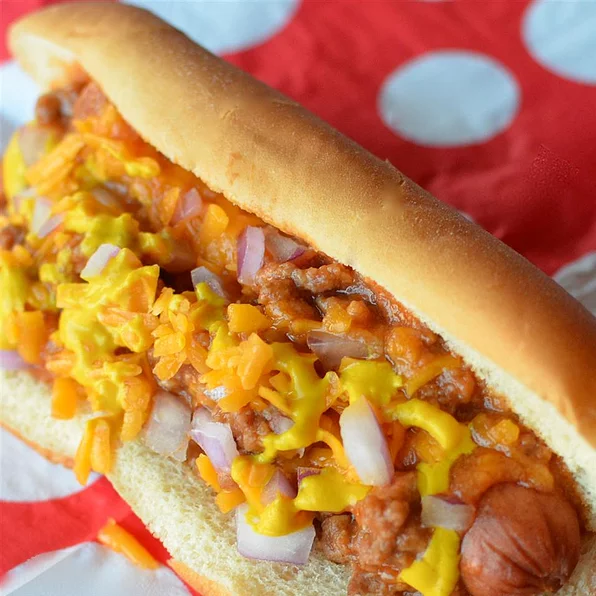

HOTDOG

Texas Hotdog Sauce
vegetable oil in a large, deep skillet over medium high heat. Place ground beef, ground pork, frankfurters, and sweet onion in the skillet. Cook until meat is evenly brown and onion is soft. Drain and lower heat.
Mix in garlic, browning sauce, ground black pepper, salt, tomato soup, water, paprika, chili powder, cinnamon and dry bread crumbs. Slowly simmer until thick, about 25 minutes.
Ingredients
- 1 tablespoon vegetable oil
- 4 ounces ground beef
- 4 beef frankfurters, diced
- ¼ cup diced sweet onion
- ½ clove garlic, peeled and minced
- ½ teaspoon browning sauce
Steps
- Heat vegetable oil in a large, deep skillet over medium high heat.
- Place ground beef
- ground pork
- frankfurters, and sweet onion in the skillet
- Cook until meat is evenly brown and onion is soft.
- Drain and lower heat.